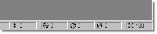
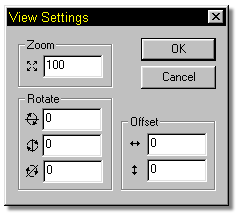

In the lower right hand corner of the interface on the status bar is a section containing important information about the current view. These values are the X, Y, and Z rotations, the X and Y offset values, and the Zoom value.
Once you become adept at navigating a 3D window, you can manually enter these values if you’d like. Click on any of the buttons in the lower right hand corner, and the following window will open:

You can now manually enter values into any of these fields to change the view as necessary.
Other Advanced Navigating Topics:
Libraries
Create Icon
World Space
Snap Manipulator to Grid
Frame Toolbar
Embedding Options